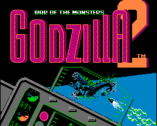

Gojira - Nintendo Games
![[Godzilla]](images/nesGodzilla.gif)
- Genre: War strategy/Shooting game
Controls
- A button: Select Monster/Punch
- B button: Unselect Monster/Kick
- Start: Shoot
- Select: Pause
You control Godzilla and Mothra as they move around a grid to gain position on the advancing
enemies. Moving from square to square can cause you to enter a shooting stage where you must destroy the enemy
guns, ships, and other objects.

This time around you control the military as they try to stop Godzilla and other creatures from destroying the city.
Anime Video Game Resource Center © 1998 by Luis A. Cruz